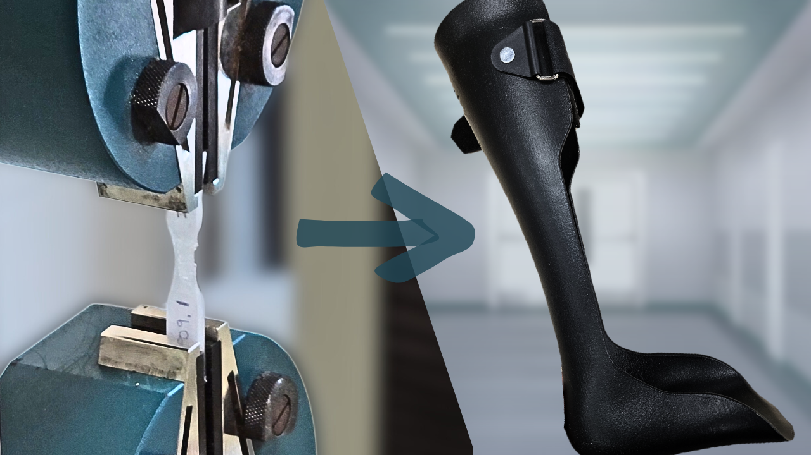
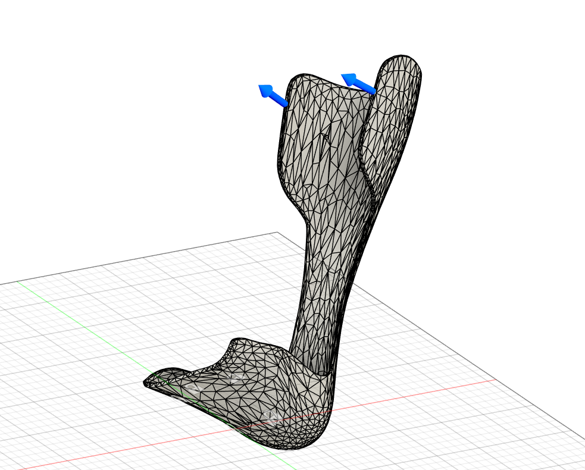
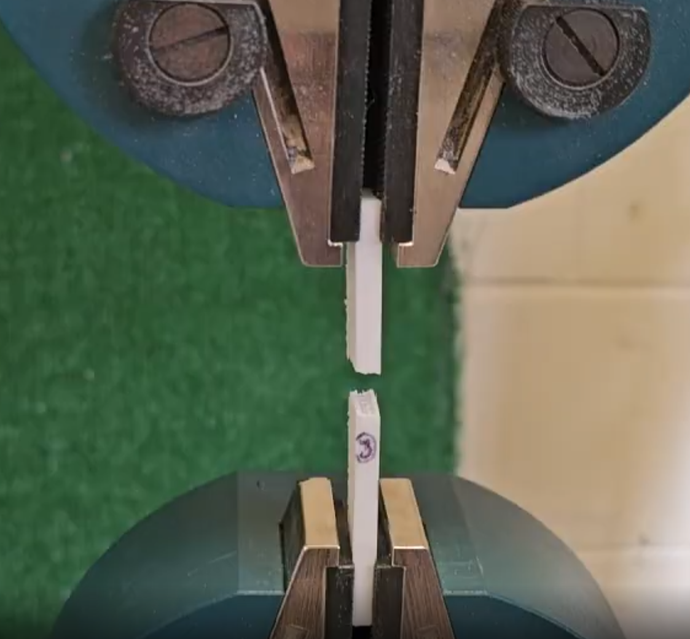
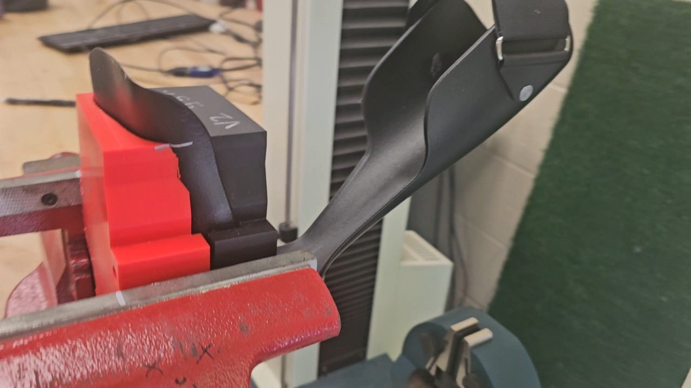

MECHANICAL DESIGN
Design & Prototyping
Mechanical design work involving CAD, prototyping, component development, and iterative design.
WORK & EXPERIENCE
My engineering experience spans research, mechanical design, additive manufacturing, experimental testing, simulation, and technical collaboration. This page highlights the projects and experiences that have shaped the way I approach engineering.
FEATURED RESEARCH · 2024–2026
Undergraduate Research Assistant
Penn State UniversityFaculty Mentor: Dr. Mukul Talaty

Undergraduate Research Assistant
Additive Manufacturing
Testing · FEA · CAD
Academic · Clinical · Industry
THE CHALLENGE
This research investigated the mechanical performance of 3D-printed polypropylene ankle-foot orthoses (AFOs) and their potential use as an alternative to conventionally fabricated braces.
The work focused on understanding how manufacturing parameters, print orientation, material behavior, and brace geometry influence mechanical performance.
DESIGN & MANUFACTURING
My work included CAD development, additive manufacturing, fixture design, material characterization, and iterative improvements to experimental setups.


TESTING & VALIDATION
I developed and refined testing procedures for both material samples and full AFO braces, performed mechanical testing, analyzed experimental data, and compared physical results with simulation.


SIMULATION
Experimental results were used to develop and calibrate a custom polypropylene material model for finite element analysis. The model allowed simulated brace behavior to be compared with physical testing.

COLLABORATION
The project involved collaboration with researchers, clinicians, and an international manufacturing partner. I participated in technical discussions, coordinated research activities, and helped supervise and train students working in the laboratory.
Working under the mentorship of Dr. Mukul Talaty also gave me experience with long-term research development, experimental problem solving, and communicating engineering decisions.
PRESENTATIONS
I presented this work through undergraduate research programs and engineering conferences.
02
ENGINEERING PROJECTS
MECHANICAL DESIGN
Mechanical design work involving CAD, prototyping, component development, and iterative design.

COMPUTATIONAL ENGINEERING
Computational work involving numerical methods, modeling, data analysis, and engineering problem solving.